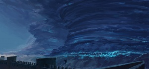
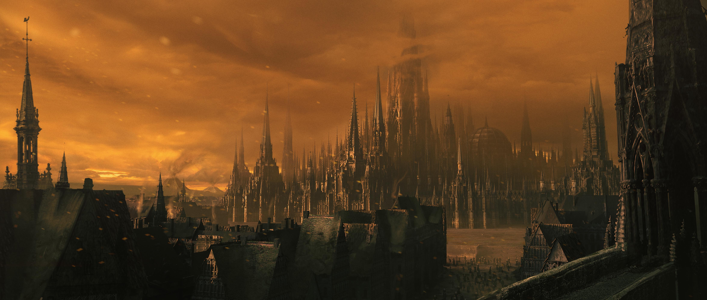
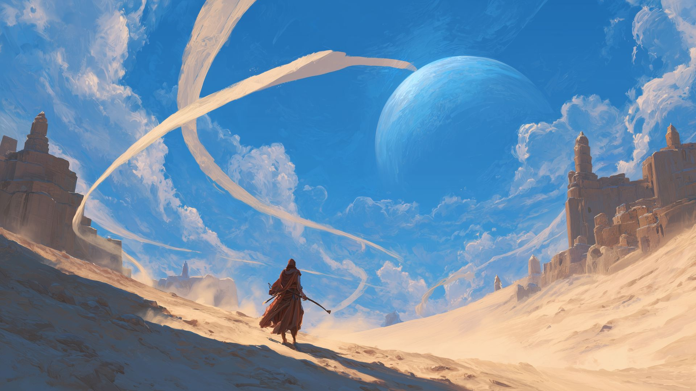
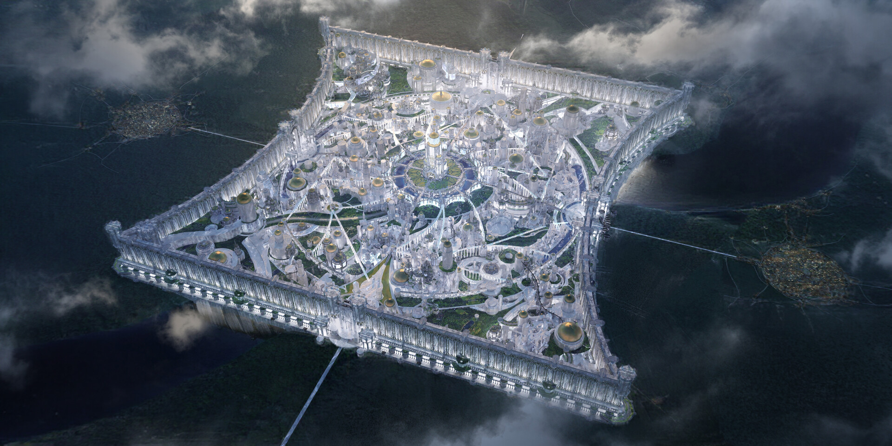
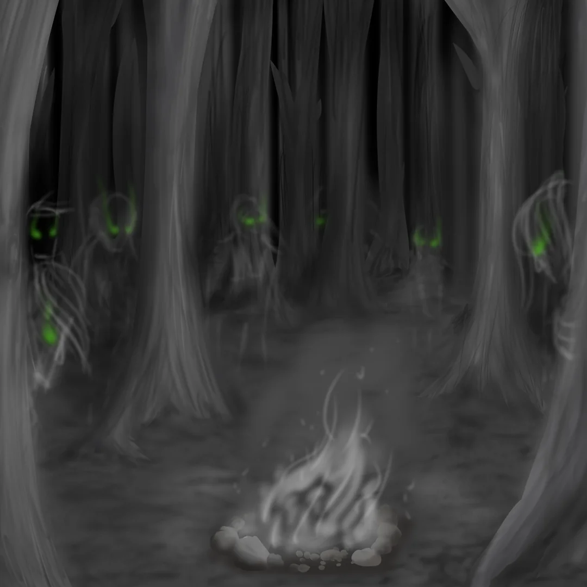

From ash, smoke, and mist to storms, stone, and light. From forests
of endless night to deserts of constant daylight. The Cosmere is
full of unique environments and peoples. The Cosmere boasts both some
of the best and worst places to vist! Here are our favorites!

-
Roshar - A Beutifully Harsh World
-
Highstorms:
Beutiful storms that frequently tear through anything in their path
-
Stormlight:
Pale blue light infused into gemstones during storms. Traditionally
used as currency and even luxury lighting.
-
Spren:
Small fairy-like beings that are drawn to
forces of nature and emotions. Each spren is attracted
to something different.
-
People:
Unfortunatelly the people here have been invoved in near constant war
for nearly 5000. But nearly every rosharan's word is as good as law.

-
Scadrial - A Decaying Land
-
Ash:
Large volcanos called ashmounts shoot smoke and ash
into the air constantly. It stains everyting!
-
Mists:
At night everything is covered in a thick mist. You can't even see the stars!
-
Metal:
Metal is extremely important to mythology and culture. Metalurgy is very advanced
compared to other crafts.

-
Taldain - Duality
-
Dayside:
From extensive deserts to more deserts. Constant sun makes for the perfect tanning
opportunity.
-
Darkside:
Constant UV light caused forests that glow. Even the people of the darkside have lightly
glowing eyes.

-
Sel
Elantris:
City of gods. Elantrians are imortal magical beings that rule benevolantly over their capital,
Elantris, and the surrounding areas. Elantrians are often sought after for their ability to
heal sickness and injury.
-
Nalthis
Tears of Edgli:
These extremely colorful flowers only grow on Nalthis in one region. They are
treasured dies.

-
Threnody
Forests of Hell:
Any threnodite that dies becomes a shade, a blood-thirsty, ghostly creature. DO NOT TRAVEL HERE.
The only thing that repels the shades is silver.
Top of Page